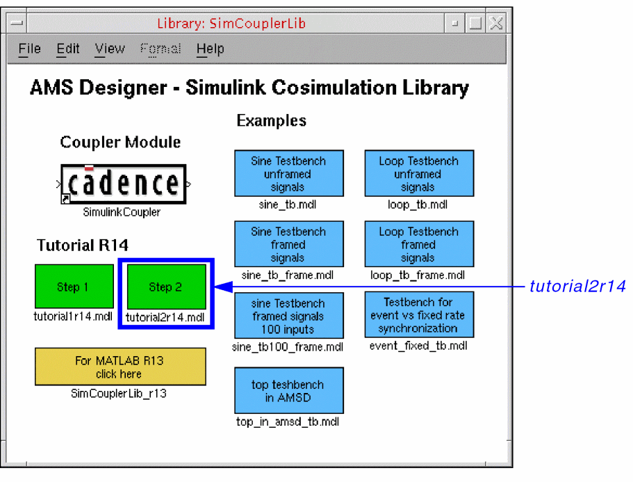
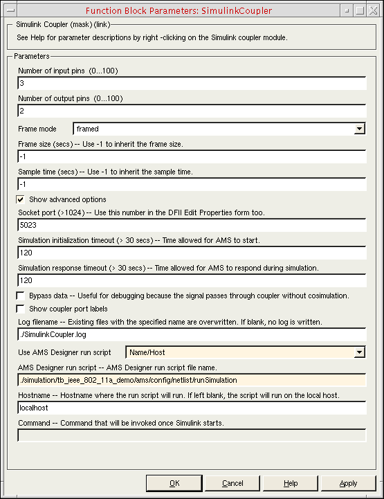

4
Running Cosimulation from MATLAB/Simulink
AMS-MATLAB/Simulink cosimulation stands for cosimulation using the Spectre AMS Designer simulator and The MathWorks MATLAB®/Simulink®. ADE stands for the Virtuoso Analog Design Environment.
Use IC 6.1.3, IUS 8.1 or later, and MATLAB704R14 or MATLAB R2007b or MATLAB R2008a for this tutorial. The estimated time to complete this tutorial is about one hour.
When AMS Designer netlists a design for simulation, it generates a run script called runSimulation in the simulation/designName/ams/config/netlist directory. You can view the contents of this file.
See the following topics for tutorial details:
- Opening the Step 2 Tutorial Schematic
- Specifying the Run Script
- Running the Cosimulation from MATLAB/Simulink
Opening the Step 2 Tutorial Schematic
To open the tutorial2r14 testbench schematic, do the following:
-
Start MATLAB software:
matlab &
-
In the MATLAB Command Window, type the following command:
open SimCouplerLib.mdl
 -
Double-click Step 2 (tutorial2r14.mdl, the green box on the right).
The tutorial schematic appears in MATLAB/Simulink.
Specifying the Run Script
To specify the run script for the cosimulation, do the following:
-
In the testbench schematic window, double-click SimulinkCoupler.
The Function Block Parameters form appears. -
Turn on Show advanced options.
Advanced options appear on the form. -
Scroll down to the Use AMS Designer run script field and select Name/Host.
./runSimulationappears in the AMS Designer run script field.
localhostappears in the Hostname field. -
In the AMS Designer run script field, type the relative path to the
runSimulationscript that ADE generated earlier in this tutorial:./simulation/tb_ieee_802_11a_demo/ams/config/netlist/runSimulation
 -
Click OK.
Assuming you have specified a valid script that runs without incident, you are now ready to run the cosimulation from MATLAB/Simulink.
Running the Cosimulation from MATLAB/Simulink
To run the cosimulation from MATLAB/Simulink using the run script you specified, do the following:
-
In the testbench schematic window, choose Simulation – Start.
The cosimulation begins. The Spectrum Scope and Received Signal graphs appear. You can watch the cosimulation progress. When the cosimulation finishes, theAMSSimulink.logfile appears in a text window.
Return to top